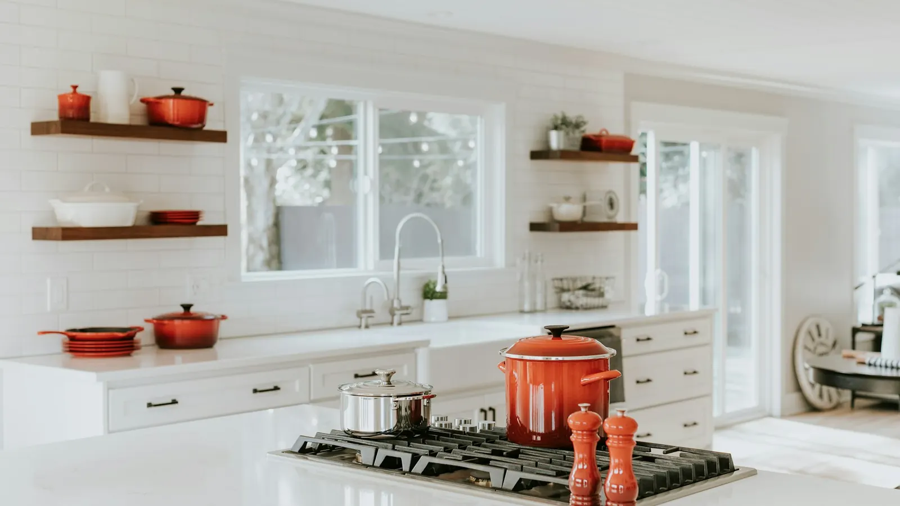
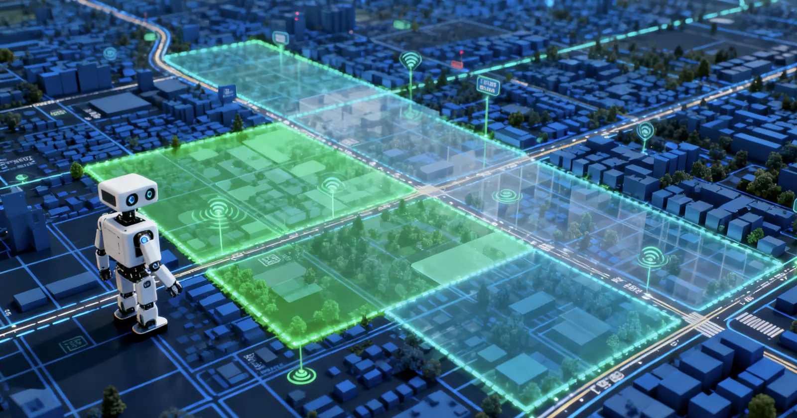
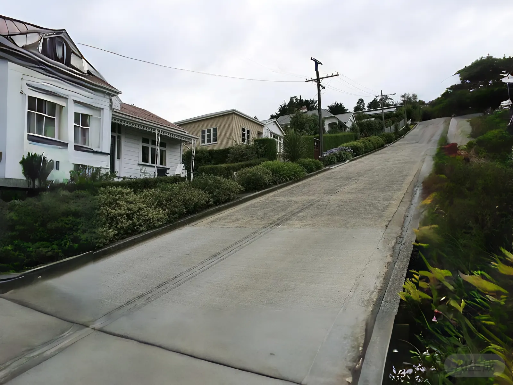
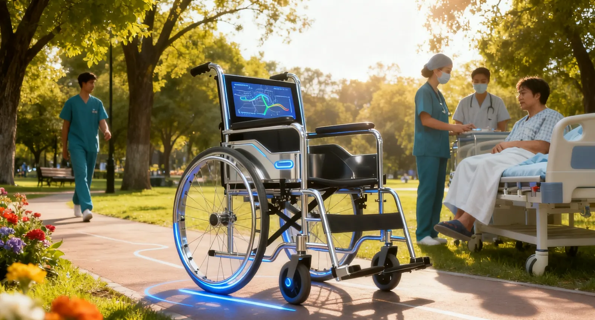
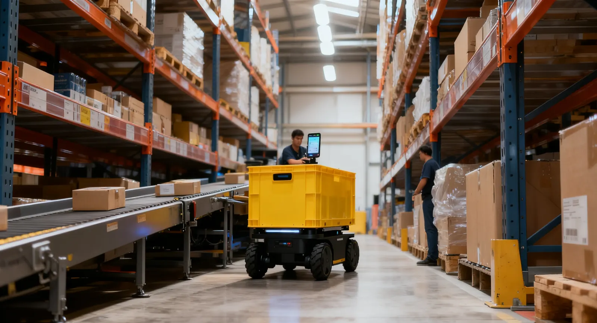
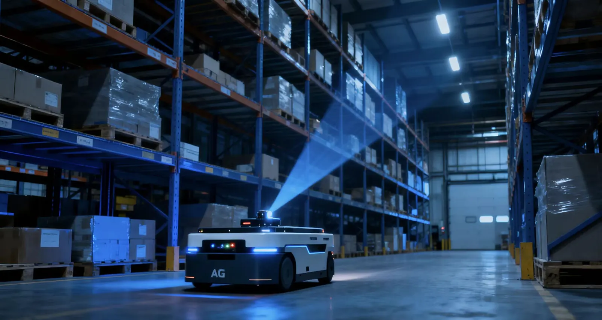
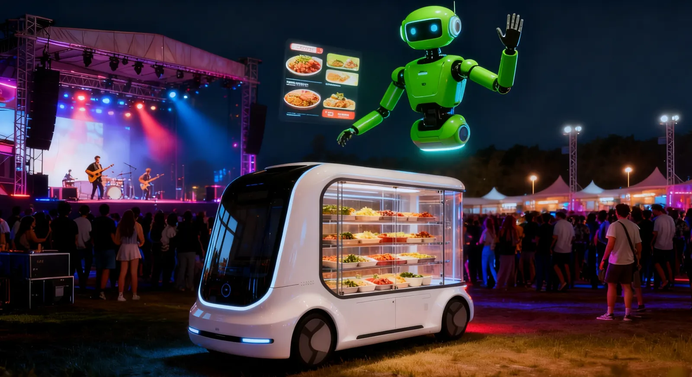

🌐 多模态感知
融合多种传感器信息，构建对环境的全面理解，通过多源数据融合获得更丰富可靠的环境信息。
具身智能（Embodied Intelligence）是指智能体通过与物理世界的交互来感知、理解和行动的能力。与传统AI不同，具身智能强调智能体必须拥有身体，并通过身体与环境的持续交互来学习和适应，真正"体验"和"理解"物理世界。
具身智能的核心在于 感知-决策-控制 的闭环系统，通过多模态传感器感知环境，基于感知信息进行智能决策，并通过执行器与环境交互，形成完整的智能行为循环。
在具身智能系统中，智能体必须考虑物理约束、空间关系、时间序列等多维度因素，在动态环境中做出实时、准确的决策。


融合多种传感器信息，构建对环境的全面理解，通过多源数据融合获得更丰富可靠的环境信息。
基于实时感知信息自主规划路径、选择行为策略，在复杂环境中做出最优决策。
通过物理执行器与环境实时交互，快速适应动态环境变化，实现连续学习和行为调整。
通过与环境持续交互学习，不断改进行为策略，提升适应能力和智能水平。
多维度智能能力，构建完整智能体系 —— 具身智能系统通过多模态感知、自主决策、实时交互、持续学习四个核心特点，构建完整智能体系。
融合视觉、语音、触觉、激光雷达等多种传感器信息，构建对环境的全面、准确理解。多模态感知系统能够处理不同传感器的时间同步、坐标变换、数据融合等复杂问题，确保感知信息的准确性和实时性。
通过多源数据融合，智能体能够获得比单一传感器更丰富、更可靠的环境信息，实现更准确的感知与识别能力。系统能够适应不同的环境条件，在光照变化、天气变化、动态环境等复杂情况下，保持稳定的感知性能。

基于实时感知信息，智能体能够自主规划路径、选择行为策略，在复杂动态环境中做出最优决策。决策系统综合考虑环境状态、任务目标、安全约束、资源限制等多重因素，采用强化学习、规划算法、博弈论等方法实现智能决策。
自主决策能力使得智能体能够在无人干预的情况下，独立完成复杂任务，适应环境变化，处理突发情况，实现真正的智能行为。系统能够处理多目标优化、不确定性决策、动态环境适应等复杂问题。
通过物理执行器与环境进行实时交互，能够快速适应动态变化的环境，实现连续的学习、优化与行为调整。实时交互要求系统具有低延迟、高响应的特点，确保智能体能够及时响应环境变化。
交互过程中，智能体通过执行器（如机械臂、轮式底盘）对环境施加影响，同时感知环境反馈，形成闭环控制，实现精确、稳定的操作能力。系统能够处理执行器的物理约束、动力学特性、安全限制等问题。
通过与环境的持续交互，智能体能够从经验中学习，不断改进行为策略，提升适应能力和智能水平。持续学习使得智能体能够适应新环境、新任务，无需重新训练即可快速适应。
学习过程包括在线学习、迁移学习、元学习等多种方式，使得智能体能够在有限的数据和计算资源下，快速获取性能，实现真正的智能进化。系统能够从失败中学习，从成功中总结，不断优化行为策略。
感知-决策-控制的完整闭环系统 —— 从底层的环境感知，到中层的智能决策，再到上层的精确控制，每一层都具备独立的功能模块，同时通过标准接口实现无缝协同，确保系统的高效运行和稳定可靠。
感知层是具身智能系统的基础，负责从环境中获取信息。通过多传感器融合技术，整合视觉、听觉、触觉、激光雷达、IMU等多种传感器数据，构建对环境的全面、准确理解。
决策层是具身智能系统的核心，负责基于感知信息进行智能决策。通过路径规划、行为决策、任务调度、策略优化等技术，在复杂动态环境中做出最优决策。
控制层负责执行决策层指令，通过运动控制、执行反馈、实时调整等技术，实现精确稳定的操作能力。
感知-决策-控制形成完整闭环，实时反馈优化系统性能。
低延迟数据处理，快速响应环境变化，确保系统实时性。
多重安全保障机制，确保系统稳定运行。
多传感器融合实现厘米级定位精度。
优化算法实现实时处理和高效率。
模块化设计支持灵活扩展和升级。
前沿技术融合，构建完整技术体系 —— 从底层的传感器融合，到中层的SLAM定位与建图，再到上层的深度学习与决策规划，每一层都采用最先进的技术方案，确保系统的智能性、可靠性和高效性。
实时定位与建图技术，使智能体能够在未知环境中自主导航与定位。SLAM算法能够同时估计自身位置和构建环境地图，为导航和路径规划提供基础。支持视觉SLAM、激光SLAM、多传感器融合SLAM等多种方案，适应不同应用场景的需求。系统能够在动态环境中实时更新地图，处理环境变化，确保定位的连续性和准确性。
基于深度神经网络的目标检测、语义分割与行为预测，提升智能决策能力。深度学习模型能够从大量数据中学习复杂的特征表示，实现高精度的感知和决策。支持卷积神经网络、循环神经网络、Transformer等多种架构，适应不同的任务需求。系统采用迁移学习和模型压缩技术，在保证性能的同时提升推理效率。
集成LLM实现自然语言理解与对话，提供更智能的人机交互体验。大语言模型能够理解复杂的自然语言指令，生成流畅的对话回复，实现真正的智能交互。支持多轮对话、上下文理解、情感分析等功能，提升用户体验和交互质量。系统支持多种语言模型，可根据应用场景选择最适合的模型，实现个性化交互体验。
多源数据融合处理，整合视觉、激光雷达、IMU等多种传感器信息，构建高精度的环境感知系统。传感器融合能够克服单一传感器的局限性，提供更可靠、更全面的感知能力。采用卡尔曼滤波、粒子滤波、深度学习融合等多种方法，实现高精度的数据融合。系统能够自适应调整融合策略，根据环境条件动态优化传感器权重。
SLAM技术为智能轮椅、物流机器人等提供精确的定位和导航能力，实现自主移动和路径规划，适应室内外复杂环境。
深度学习技术实现高精度的目标检测、场景理解和行为预测，为智能决策提供准确的感知信息，提升系统智能化水平。
多传感器融合实现厘米级定位精度，确保复杂环境中的准确感知和定位。
优化算法实现实时处理和高效率，支持大规模数据处理和复杂计算任务。
模块化设计支持灵活扩展和升级，可根据需求添加新功能模块。
适配多种应用场景和硬件平台，支持跨平台部署，实现技术方案的广泛适用性。
多领域智能应用，赋能各行各业

通过视觉导航、语音交互和自主避障，为行动不便者提供安全、便捷的出行辅助。智能轮椅集成了SLAM定位、路径规划、障碍物检测等先进技术，能够在室内外环境中自主导航，避开障碍物，规划最优路径。
系统配备大语言模型，支持自然语言交互，用户可以通过语音指令控制轮椅，实现"说走就走"的便捷体验。同时，智能轮椅还具备情感陪伴功能，能够与用户进行对话交流，提供心理支持。

智能运货小车和餐车通过环境感知与路径规划，在复杂环境中自主导航，实现高效的物流配送服务。系统能够实时感知周围环境，识别障碍物、行人、车辆等，动态调整路径，确保安全高效的配送。
支持多机器人协同作业，通过云端调度系统实现任务分配、路径优化、冲突避免等功能，大幅提升物流效率，降低人力成本，实现24小时不间断的智能配送服务。

结合机器视觉与智能控制，实现产品质量检测、缺陷识别与自动化分拣，提升工业生产的智能化水平。系统采用深度学习算法，能够识别微小的缺陷、色差、尺寸偏差等问题，准确率高达99%以上。
通过实时图像处理和分析，系统能够在生产线上快速检测产品，自动分类和分拣，大幅提升生产效率，减少人工成本，确保产品质量的一致性。

辅助康复训练、智能护理、远程医疗监测等应用，为医疗健康领域提供智能化解决方案。智能康复机器人能够根据患者的身体状况，制定个性化的康复训练计划，实时监测训练效果，调整训练强度。
系统支持远程医疗监测，医护人员可以通过云端平台实时了解患者的健康状况，及时提供医疗建议和干预，提升医疗服务的效率和质量。
家庭服务机器人、智能安防、环境控制等应用，打造智慧生活空间，提升居住舒适度。智能家居系统通过具身智能技术，实现设备的自主感知、决策和控制，为用户提供更智能、更便捷的生活体验。
系统能够学习用户的生活习惯，自动调节室内温度、湿度、光照等环境参数，提供个性化的智能服务。同时，智能安防系统能够实时监测家庭安全状况，及时发现异常情况并报警。
城市巡检、环境监测、交通管理、公共安全等应用，助力智慧城市建设，提升管理效率。智能巡检机器人能够自主在城市中巡逻，实时监测环境状况，识别异常情况，及时上报处理。
通过大数据分析和AI算法，系统能够预测交通流量、环境变化、安全风险等，为城市管理提供科学决策支持，实现城市资源的优化配置，提升城市运行效率和居民生活质量。
前沿技术融合，构建核心竞争力
整合视觉、激光雷达、IMU、GPS等多种传感器，构建高精度、高可靠性的环境感知系统。多传感器融合技术能够克服单一传感器的局限性，通过数据互补和冗余校验，提升感知系统的鲁棒性和准确性。
系统采用先进的融合算法，实现不同传感器数据的时间同步、空间对齐、权重分配等功能，确保融合结果的准确性和实时性，为智能决策提供可靠的数据基础。
SLAM技术实现未知环境自主导航与定位，支持视觉、激光、多传感器融合方案。
基于深度学习的目标检测、语义分割与行为预测，提升智能决策能力。
集成大语言模型实现自然语言理解与对话，提供智能人机交互体验。
低延迟的运动控制与路径规划，确保智能体能够快速响应环境变化。实时控制系统采用高效的算法和优化的硬件架构，实现毫秒级的响应时间，确保智能体能够及时应对突发情况。
系统支持多级控制架构，从底层的电机控制到上层的路径规划，每一层都经过精心优化，确保控制过程的流畅性和准确性，实现精确、稳定的操作能力。
多重安全机制与故障检测，确保智能体在复杂环境中的安全运行。系统采用多层次的安全防护机制，包括硬件安全、软件安全、数据安全等多个方面，确保智能体的安全性和可靠性。
系统具备实时故障检测、异常情况处理、紧急停止等功能，能够在检测到异常情况时及时采取安全措施，保护用户和设备的安全，确保系统的稳定运行。
未来智能，无限可能
大模型和强化学习技术发展将提升智能体决策能力，实现更优推理和泛化性能。
5G和边缘计算技术实现智能体高效协同，构建智能物联网生态系统。
传感器技术的进步和AI算法的优化，将实现更高精度、更全面的环境感知，提升智能体的适应能力。未来的感知系统将具备更高的分辨率、更广的感知范围、更强的抗干扰能力。
通过新型传感器技术、先进的信号处理算法、深度学习模型等，系统将能够感知更细微的环境变化，理解更复杂的场景信息，为智能决策提供更丰富、更准确的数据支持。
自然语言处理、情感计算、多模态交互等技术的发展，将实现更自然、更人性化的人机交互，提升用户体验。未来的交互系统将能够理解用户的情感、意图、偏好等多维度信息。
通过情感识别、个性化推荐、主动服务等技术，系统将能够提供更贴心、更智能的交互体验，实现真正的人性化智能服务，让用户感受到被理解和被关怀。
迁移学习、元学习、小样本学习等技术的发展，将实现更快速、更高效的知识迁移和学习，缩短训练周期。未来的学习系统将能够从少量数据中快速学习，快速适应新任务。
通过知识蒸馏、模型压缩、增量学习等技术，系统将能够在保持高性能的同时，大幅降低计算和存储成本，实现更高效、更经济的智能学习能力。
边缘计算、硬件加速、模型优化等技术的发展，将实现更低的延迟和更快的响应速度，提升实时性能。未来的系统将能够在边缘设备上运行复杂的AI模型，实现毫秒级的响应。
通过专用AI芯片、模型量化、推理优化等技术，系统将能够在保证精度的同时，大幅提升处理速度，实现真正的实时智能响应，满足对实时性要求极高的应用场景。
前沿研究方向，探索智能边界
研究机器人自主导航技术，包括SLAM定位建图、路径规划、障碍物避让等，通过多传感器融合实现高精度导航能力。
研究基于深度学习的图像识别、目标检测、语义分割等技术，实现高精度的视觉感知能力。通过卷积神经网络、Transformer等先进架构，提升视觉系统的性能和效率。
研究重点包括轻量化网络设计、实时目标检测、多尺度特征融合、小样本学习等，为工业视觉、智能监控、自动驾驶等应用提供技术基础。
研究大语言模型、对话系统、情感计算等技术，实现智能的自然语言理解和生成能力。通过Transformer架构和预训练技术，构建强大的语言理解模型。
研究重点包括大语言模型微调、多轮对话理解、情感识别与生成、知识图谱融合等，为智能交互、情感陪伴、知识问答等应用提供技术支撑。
研究深度强化学习、模仿学习、元学习等技术，实现智能体的自主学习和策略优化。通过与环境交互，智能体能够学习最优的行为策略，适应复杂动态环境。
研究重点包括深度Q网络、策略梯度方法、模仿学习、迁移学习等，为机器人控制、游戏AI、自动驾驶等应用提供技术基础，实现真正的自主学习和智能决策。